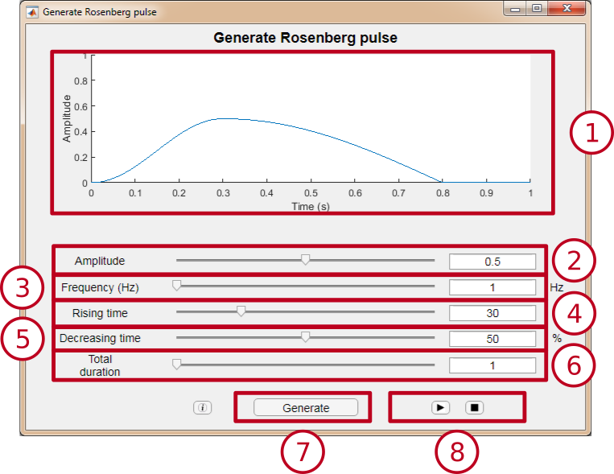
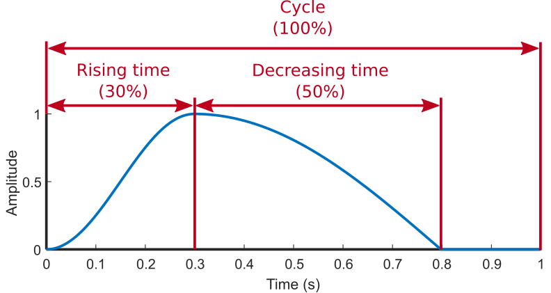

Generate Rosenberg pulse
This module allows the generation of a Rosenberg pulse, with the possibility of modifying the parameters of amplitude, frequency, rising time and decreasing time.
Interface

-
Preview window: Allows to see the signal that will be generated by the module. It is updated when the value of some parameter changes.
-
Amplitude selector: Allows to vary the amplitude of the Rosenberg pulse between 0 and 1. The value can be changed sliding the cursor or modifying the value in the text box.
-
Frequency selector: Allows to vary the frequency of the Rosenberg pulse between 1 and 20000 Hz. The value can be changed by sliding the cursor or modifying the value in the text box.
-
Rising time selector: Allows to vary the rising time, in relation to the total cycle time, between 10% and 90%. The value can be changed by sliding the cursor or by modifying the value in the text box.
-
Decreasing time selector: Allows to vary the decreasing time, in relation to the total cycle time, between 10% and 90%. The value can be changed by sliding the cursor or modifying the value in the text box.
-
Duration selector: Allows to vary the duration of the signal between 1 and 30 seconds. The value can be changed by sliding the or by changing the value in the text box.
-
"Generate" button: Opens a new display window to observe a signal with the selected parameters.
-
Playback buttons: They allow to control the playback of the audio signal.
Rosenberg pulse
It's a pulse used in synthetic voice generation. With this model, the aim is to imitate the sound produced by the glottis when performing the opening and closing movements.
The configurable parameters are as follows:
-
Amplitude: Maximum signal value.
-
Frequency: Number of periods in 1 second, measured in Hz (For more information, click here).
-
Rising time: Time it takes for the signal to rise from the minimum to the maximum. It represents the glottal opening time.
-
Decreasing time: Time it takes for the signal to descend from the maximum to the minimum. It represents the glottal closing time.

More information
Frequency: Number of times an entire signal cycle is repeated along a time unit. Measured in Hertz (Hz) is the number of times a signal cycle is repeated in 1 second.

|
|
In this example the frequency is 2 Hz
|